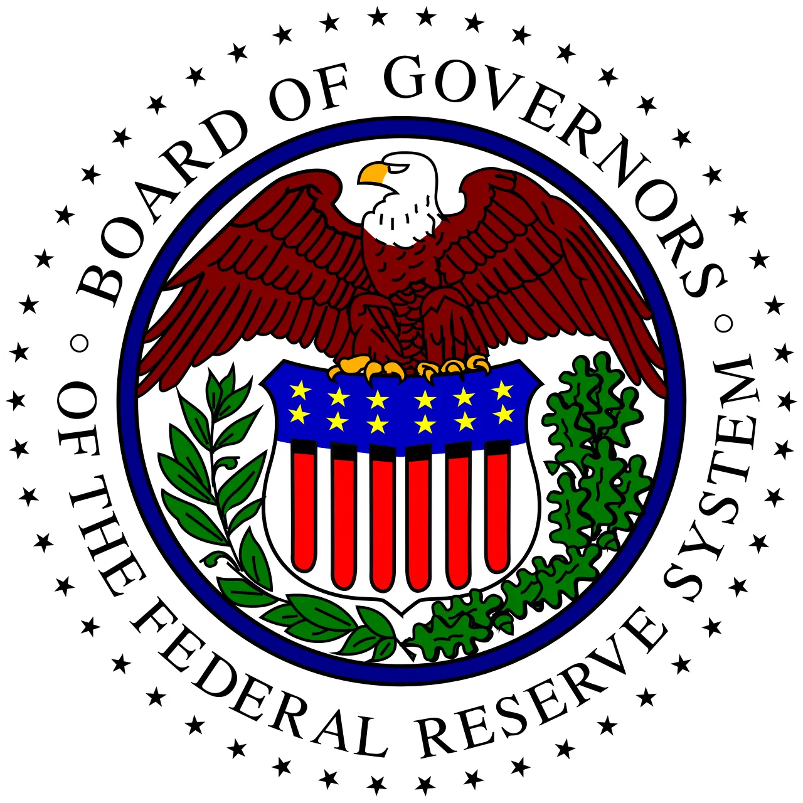

미국 물가가 다시 시장의 중심으로 들어왔습니다. 2026년 4월 소비자물가지수 발표 이후 투자자들은 금리 인하가 늦어질 수 있다는 쪽으로 빠르게 반응했습니다. 하지만 물가 재가열을 금리 경로만으로 읽으면 생활경제의 핵심을 놓치기 쉽습니다. 가격이 다시 오르면 가계는 장보기와 임대료, 보험료, 의료비에서 먼저 압박을 느끼고, 기업은 임금과 원가를 제품 가격에 얼마나 넘길 수 있는지 계산해야 합니다.
물가가 한 번 내려오다 다시 오르는 국면은 소비자에게 더 피곤합니다. 사람들은 이미 높은 가격에 익숙해진 상태에서 추가 인상을 마주합니다. 중앙은행은 금리를 급히 내리기 어렵고, 기업은 수요가 둔해질까 봐 가격 인상에 조심스러워집니다. 그래서 지금의 물가 이슈는 “금리가 언제 내려가나”보다 “누가 비용을 더 부담하나”라는 질문으로 봐야 합니다.
물가는 늦게 생활비가 됩니다

CPI 숫자는 한 달의 변화처럼 보이지만 가계가 체감하는 생활비는 훨씬 느리게 쌓입니다. 식료품과 에너지처럼 자주 사는 품목은 즉시 느껴지고, 보험료나 임대료처럼 계약에 묶인 항목은 갱신 시점에 충격이 옵니다. 물가가 다시 올라가면 사람들은 같은 소득으로 더 적은 선택지를 갖게 됩니다. 할인점, PB 상품, 외식 축소, 구독 해지 같은 행동이 늘어나는 이유입니다.
이 변화는 소비 업종에도 다르게 나타납니다. 필수재 기업은 판매량을 비교적 지킬 수 있지만, 가격 저항이 커지면 판촉비가 늘어납니다. 재량소비 기업은 소비자가 구매를 미루는 영향을 더 크게 받습니다. 물가 지표를 볼 때는 전체 숫자만 보지 말고 어떤 항목이 오르는지 확인해야 합니다. 생활비의 압박은 평균보다 장바구니 안에서 먼저 드러납니다.
서비스 가격은 잘 내려오지 않습니다
상품 가격은 재고와 물류가 풀리면 내려올 수 있습니다. 반면 서비스 가격은 임금, 임대료, 보험료와 연결되어 쉽게 꺾이지 않습니다. 미용, 외식, 의료, 여행, 수리 서비스처럼 사람이 직접 제공하는 영역은 임금 비용이 큰 비중을 차지합니다. 임금이 한 번 올라간 뒤에는 기업이 가격을 낮추기 어렵습니다.
서비스 물가가 버티면 중앙은행의 고민도 깊어집니다. 물가가 내려오는 것처럼 보이다가 서비스 항목이 계속 남아 있으면 금리 인하 명분이 약해집니다. 시장은 금리 인하 날짜를 맞히려 하지만, 연준이 보는 것은 한두 달의 숫자보다 물가 둔화가 넓고 지속적인지입니다. 서비스 가격이 버티는 동안 금융시장은 작은 지표에도 크게 흔들릴 수 있습니다.
기업 마진은 가격 전가력에서 갈립니다
물가가 오르는 시기에는 모든 기업이 유리하지 않습니다. 원가가 오를 때 가격을 올릴 수 있는 기업과 그렇지 못한 기업의 차이가 커집니다. 브랜드 충성도가 높거나 대체재가 적은 기업은 마진을 지킬 여지가 있습니다. 반대로 경쟁이 치열하고 소비자가 쉽게 옮겨 갈 수 있는 업종은 매출이 늘어도 이익률이 눌릴 수 있습니다.
기업 실적을 볼 때는 매출 증가율보다 매출총이익률과 판관비 흐름을 함께 봐야 합니다. 물가가 높으면 임금, 운송비, 임대료, 금융비용이 동시에 부담이 됩니다. 가격 인상으로 매출을 키웠더라도 할인과 마케팅 비용이 늘면 이익은 덜 남습니다. 물가 국면에서는 성장률보다 이익의 질이 더 중요해집니다.
금리보다 신용 여건을 봐야 합니다
금리 인하가 늦어지면 대출자는 더 오래 높은 이자를 부담합니다. 주택담보대출, 자동차 할부, 신용카드, 기업 차입 비용이 모두 영향을 받습니다. 특히 중소기업과 저신용 가계는 금리 수준뿐 아니라 대출 심사 강화의 영향을 더 크게 받습니다. 돈의 가격이 높아지는 것보다 돈을 구하기 어려워지는 순간이 더 위험할 수 있습니다.
시장은 금리 인하 기대를 빠르게 사고팝니다. 그러나 실제 경제는 지연되어 움직입니다. 물가가 다시 강해지면 소비자는 지출을 줄이고, 기업은 투자 계획을 다시 보며, 은행은 대출 기준을 조정합니다. 미국 물가 재가열은 숫자 하나의 이벤트가 아니라 생활비, 마진, 신용 여건이 동시에 시험받는 국면입니다.
물가 지표를 볼 때 소비자는 기준금리보다 먼저 장바구니와 월세, 보험료, 외식비를 떠올립니다. 중앙은행은 한 달 수치만 보고 움직이지 않지만, 가계는 같은 지출이 몇 달 이어지면 바로 소비를 줄입니다. 기업도 원가를 모두 가격에 넘기기 어렵기 때문에 마진을 줄이거나 판촉을 조정합니다. 물가가 조금 둔화됐다는 headline이 나와도 서비스 가격과 주거비가 버티면 체감 경기는 쉽게 가벼워지지 않습니다.
따라서 금리 인하 시점을 맞히는 데만 집중하면 중요한 장면을 놓칠 수 있습니다. 임금 상승률이 소비를 버틸 만큼 충분한지, 신용카드 연체와 자동차 대출 부담이 커지는지, 소매업체가 재고를 할인으로 밀어내는지 함께 봐야 합니다. 물가와 금리의 연결고리는 금융시장보다 생활비에서 먼저 약해지거나 강해집니다. 이번 국면의 핵심은 물가가 내려오느냐가 아니라, 내려오는 속도가 가계와 기업의 버틸 힘보다 충분히 빠른지입니다.
기업 실적을 볼 때도 물가는 단순한 거시 지표가 아닙니다. 원재료 가격이 내려가도 인건비와 임대료가 남아 있으면 이익률 회복은 늦어집니다. 반대로 가격 인상분을 유지한 기업은 매출이 버티지만 소비자 이탈을 겪을 수 있습니다. 그래서 이번 물가 국면에서는 할인율, 객단가, 방문 횟수, 재고 회전율처럼 현장에서 보이는 숫자가 중요합니다. 기준금리 결정은 늦게 오지만, 소비자의 선택은 매주 계산대에서 먼저 바뀝니다.
가계의 대응도 계층별로 다릅니다. 여유 자금이 있는 가구는 높은 예금 금리로 일부 보상을 받지만, 변동금리 대출이나 카드 리볼빙에 기대는 가구는 물가와 이자를 동시에 맞습니다. 이 차이가 커질수록 같은 물가 지표라도 소비의 방향은 갈라집니다. 필수 소비는 버티고 선택 소비는 줄어드는 흐름이 나타나면 기업 매출의 질도 달라집니다. 물가 둔화의 진짜 효과는 평균 숫자가 아니라 취약한 지출 항목에서 먼저 확인됩니다.
앞으로 확인할 것은 물가의 방향만이 아닙니다. 어떤 항목이 오르고, 임금과 소비가 어떻게 반응하며, 기업이 가격을 어디까지 넘기는지가 중요합니다. 금리 인하가 늦어지는 뉴스보다 생활비와 마진이 어디에서 먼저 깨지는지를 보는 편이 경제의 실제 압력을 더 잘 보여 줍니다.